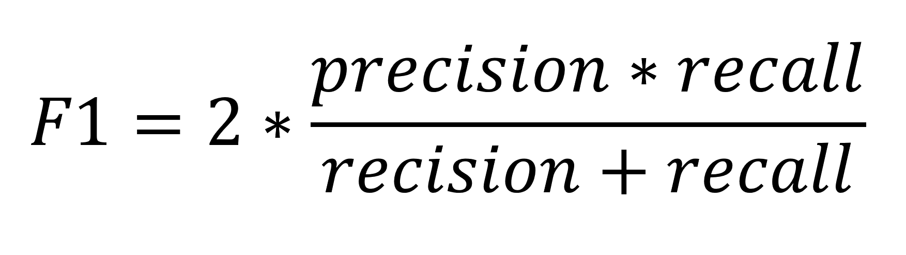

Introduction
Quora.com is a platform where people can ask questions and connect with others who contribute unique insights and quality answers. A key challenge is to weed out insincere questions, founded upon false premises, or intending to make a statement rather than look for helpful answers. Quora has released a Kaggle competition to develop models that identify and flag insincere questions.
Quora Insincere Questions Classification
While we are not veteran Kaggler’s our motivation with this competition was to learn interesting machine learning techniques used for text based data.
Our original project proposal was based on the Kaggle competition “Toxic Comment Classification Challenge”. However, since Quora recently released this new competition which has a similar premise we decided it would be interesting to work on a newer problem.
The Data
The training data is 1.31m rows of data, it looks like this.
| qid | question_text | target |
|---|---|---|
| 00002165364db923c7e6 | How did Quebec nationalists see their province as a nation in the 1960s? | 0 |
| … | … | … |
| cd7642554d107f946d8a | What is the full form of DML? | 0 |
The test data is 56.4k rows of data, it obviously does not have the target labels, it looks like this.
| qid | question_text |
|---|---|
| 00014894849d00ba98a9 | My voice range is A2-C5. My chest voice goes up to F4. Included sample in my higher chest range. What is my voice type? |
| … | … |
| fffed08be2626f74b139 | Why do all the stupid people I know tend to be left-wing? |
The rules by which the training data was scored is as follows:
- Has a non-neutral tone
- Is disparaging or inflammatory
- Isn’t grounded in reality
- Uses sexual content for shock value
Several sets of word embeddings were also provided:
- Google word2vec embeddings from Google News
- “GloVe” word embeddings from Wikipedia
- PPDB Paragram word Embeddings
- fastText trained word embeddings from Wikinews
Evaluation
Submissions are scored on F1 Score

Exploratory Data Analysis
Every good data scientist will understand that the first step in tackling a problem is to look at the data, so that is what we did.
Imbalanced Target:
We first looked at the distribution of the target variable. The number of insincere questions is much less than the sincere, with only 6% of the training set being insincere. That means we are working with a highly imbalanced data set, which must be considered when modeling.
Word Clouds:
Next we looked at a word cloud of the insincere and sincere questions to get a feel for the data. As you can see the insincere question has much more controversial words.


Word frequency:
It is hard to get much detail from a word cloud, so we looked at the word frequencies of respective classes. In addition to single word frequencies we also examined bi-gram and tri-gram frequency. The results make sense, sincere questions will ask for “best ways” or “pro cons” while insincere questions will ask about a specific group or include phrases such as “stupid question”.
Bi-Gram Frequency Chart:
| Most Insincere 2 grams | Word Count | Most Sincere 2 grams | Word Count |
|---|---|---|---|
| donald trump | 1253 | best way | 6973 |
| white people | 673 | year old | 2972 |
| black people | 653 | will happen | 2084 |
| many people | 383 | many people | 1931 |
| united states | 360 | computer science | 1870 |
| even though | 335 | even though | 1859 |
| trump supporters | 335 | known for? | 1822 |
| year old | 330 | united states | 1797 |
| president trump | 328 | long take | 1796 |
| hillary clinton | 305 | high school | 1775 |
| people think | 297 | best ways | 1447 |
| chinese people | 255 | social media | 1435 |
| indian muslims | 225 | donald trump | 1417 |
| indian girls | 221 | look like? | 1327 |
| people hate | 217 | much time | 1287 |
| north indians | 204 | much money | 1176 |
| people quora | 186 | best place | 1162 |
| indian women | 184 | people think | 1143 |
| white women | 168 | united states? | 1126 |
Logistic Regression Coefficients:
Next we ran a basic Logistic Regression model so that we could examine the weights of individual words and see how they influence the target variable. The highest weighted words are extremely offensive such as “castrate”.
| Most insincere words | Coefficient | Most sincere words | Coefficient |
|---|---|---|---|
| castrated | 20.612 | books | -5.422 |
| castrate | 18.014 | men women | -5.606 |
| liberals | 17.248 | differences | -5.671 |
| democrats | 17.019 | affect | -5.688 |
| muslims | 16.91 | christians muslims | -5.912 |
| indians | 15.34 | black hole | -5.929 |
| trump | 14.543 | liberals conservatives | -5.978 |
| americans | 14.329 | tips | -5.992 |
| blacks | 14.226 | best | -6.358 |
| women | 14.122 | democrats republicans | -6.594 |
We also looked at the most negative weighted words, suggesting words that are most found with sincere questions. The data makes sense as the most negative words are “best” or “tips”. What is interesting here is that with sincere questions there is mentions of both sides of opposing ideas, such as “liberals conservatives” or “black white”. This possibly suggests that more sincere questions consider both sides of argument rather than imposing stereotypes on one.
Word Embeddings:
To visualize the overlapping of insincere and sincere words, we took the 250 most frequent words of both categories, took their respective vectors from a pre-trained glove-embedding, and mapped them to 3D space using PCA. Below you can see the 3D-visualization of the words. The blue dots are words belonging to the sincere category, red dots are words belonging to the insincere category, and green dots belong to both. The glove embedding uses vectors of dimension 300 and only 15.86% of the variance is explained when mapping down to 3 dimensions, so this visualization is by no means a perfect representation of spread. However, we noticed that insincere words tend to be more spread out compared to sincere word and that there is a significant amount of overlapping, making this a more difficult problem. We noticed that words which are insincere tend to refer to a group of people and words which are sincere or both tend to have more neutral connotations.
Interactive representation of word vectors for top words from data:
Data Preprocessing
This Kaggle competition is kernel only, so we can only use the provided data, therefore we planned on utilizing the word embeddings provided. Word embedding is a natural language processing technique where words or phrases from the vocabulary are mapped to vectors of real numbers. However, to get the most of word embeddings the vocabulary of the training set must be in the embeddings, for example if the word “cat” is in the training set, there must also be an entry for it in the embedding.
After exploring the data, we realized the data was quite messy and could be cleaned up. Cleaning the data was crucial to get better performance coverage of the word embeddings. With no preprocessing only 32.77% of all vocabulary in the question corpus was covered by the embedding and only 88.14% of all the text was covered.
Our cleaning process:
- Expand contractions out to two words
- Remove non-printable characters.
- Replace special characters with words. For example ‘∞’: ‘infinity’
- Replace numbers with # symbol.
- Change European spellings to American and correct other common misspellings
- “Facebook”, “Instagram” , etc. convert to “Social medium”
- Remove stop words and one character words.
After all of this cleaning we improved the word embedding coverage to cover 75% of the vocab and 99.595% of the text.
Modeling
Model 1: Simple Recurrent Neural Network
The first model we experimented with is a simple RNN implementation in Keras. This RNN utilizes a bidirectional GRU as its recurrent unit (from other kernels, using a bidirectional LSTM as the recurrent unit didn’t seem to perform as well). The entire model architecture is shown below:
The entire model architecture is shown below:

| Layer (type) | Output Shape | Param # |
|-------------------------------|------------------|----------|
| input_1 (InputLayer) | (None, 100) | 0 |
| embedding_1 (Embedding) | (None, 100, 300) | 15000000 |
| bidirectional_1 (Bidirection | (None, 100, 128) | 140544 |
| global_max_pooling1d_1 (Glob) | (None, 128) | 0 |
| dense_1 (Dense) | (None, 16) | 2064 |
| dropout_1 (Dropout) | (None, 16) | 0 |
| dense_2 (Dense) | (None, 1) | 17 |
|-------------------------------|------------------|----------|
Total params: 15,142,625
Trainable params: 15,142,625
Non-trainable params: 0
For both inference and training, each input question/sentence is first cleaned, tokenized, and padded into a sequence of length 100. This is fed into the model’s first layer, the embedding layer. As previously stated, we experimented with different pre-trained embeddings (such as word2vec, GloVe etc.) and learned embeddings (from provided training data) for this layer. This RNN implementation was used for further experimentation with different embedding options.
Next, a simple bidirectional GRU layer is used for temporal reasoning (a more detailed diagram of a GRU is shown below). The rest of the network is filled out with the usual suspects: fully connected, max pooling, and dropout layers.

This model performs reasonably well considering its simplicity. The top score achieved using this model is 0.67; an ensemble of RNNs using GloVe, FastText, and Paragram embeddings as the weights for the embedding layer is used to attain this score.
Ethics
This project raises important ethical questions.
The standard for “sincere” and “insincere” was given in the training data. Based on what training data is fed into the model, this model can discriminate between any arbitrary types of questions/statements.
The competition states that these models will be used to filter “Insincere” questions, but there is nothing preventing Quora from using these models to censor unsavory or controversial questions just to keep their advertising partners happy.
Additionally, we asked ourselves: “Why are comments on these questions not given to the model?”
We realized that the model would be intended to censor questions before other users were allowed to see them.
Is it right to have the ability to silence a minority of people for having different opinions?
Will driving controversial opinions off of the mainstream web increase or decrease social dividedness?
What We Learned
Overall this project required a large amount of learning. The competition was inherently a NLP focused project, which no one on the team had much experience with.
We learned:
- New data processing techniques for cleaning text.
- The power of word embeddings
- Data Science is hard
Future Work
Given more time, there are many areas of the project we would have expanded upon. We found a paper by Douwe, et al. called “Dynamic Meta-Embeddings for Improved Sentence Representations” explaining how to merge embeddings to improve performance. Therefore, we would have cleaned the data specifically for each embedding and tried to implement the algorithm described in the paper. In addition to incorporating multiple embeddings, we would have tried to understand more neural network models and see if ensembling them would impact performance. We also had the idea to model on features instead of tokenizing words. We also wanted to try translating words to different languages and back to see if that could have improved performance.